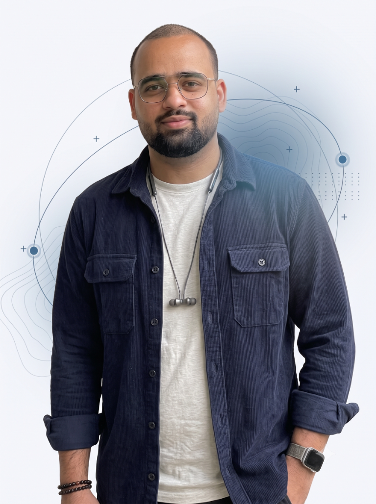

AI product & UX
Human-in-the-loop workflows, agentic interactions, trust, transparency, and useful recovery states.
Lead UX Designer · Noida, India
I’m Sahil, a product designer working across enterprise systems, design systems, and AI experiences. I bring research, systems thinking, and craft together to make the hard parts of a product easier to understand and use.
Currently designing AI products at Samsung R&D Institute India.

01 / Selected work
Selected studies spanning enterprise AI, service operations, design systems, independent research, and product design. Some enterprise details are intentionally generalized to respect confidentiality.
Transforming interactive flat panel displays from underused hardware into a global, subscription-ready classroom AI ecosystem.
Read case study 02 Samsung · Agentic UX · EnterpriseReplacing fragmented legacy workflows with four interconnected, explainable-AI portals for 25,000+ support staff across India and global markets.
Read case study 03 Onsitego · Design systemsCreating a reusable visual and interaction language across consumer, field-service, retail, and enterprise products.
Read case study 04 Onsitego · Mobile UX · Field serviceDesigning a mobile operating layer for engineers to manage jobs, travel, repair evidence, and operational updates.
Read case study02 / About
My computer-science background shaped how I approach design: as connected components, states, and decisions—not isolated screens. I’ve carried that perspective from four years at Onsitego to my current work on AI products at Samsung.
More about my approach03 / What I do
Human-in-the-loop workflows, agentic interactions, trust, transparency, and useful recovery states.
Research, information architecture, service workflows, complex tools, and design systems.
Interactive prototypes, clear design documentation, and close collaboration with engineering teams.
04 / Skills
From early discovery through detailed interaction design, I connect strategy to a usable, buildable product.
05 / Contact
I’m open to conversations about AI products, complex systems, and meaningful design work.
Let’s talk06 / A little design thinking
Try 10 quick questions about thoughtful design. See what your instincts notice, then take a fresh set whenever you like.
YOUR UX INSTINCTS